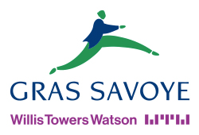
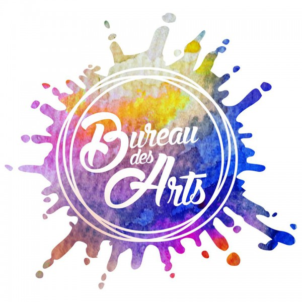
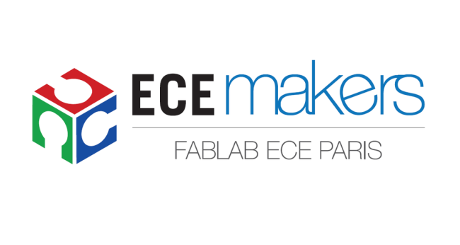

Cinq semaines en janvier/février 2019.  Stage réalisé dans le département technique des assurances de personnes avec une vue globale du mode de fonctionnement d’une grande entreprise.
Un mois en janvier 2018. Stage réalisé au sein du service informatique. Maintenance du matériel et installation d’un dispositif de retransmission vidéo en direct.
Tenue des comptes et réalisation de budgets prévisionnels pour les événements de l'association sur l'année 2019-2020. 
Membre du fablab de l'ECE-Paris. 
De septembre à décembre 2018. Cours d’électronique et d’informatique (c# et XML) dispensés en anglais.